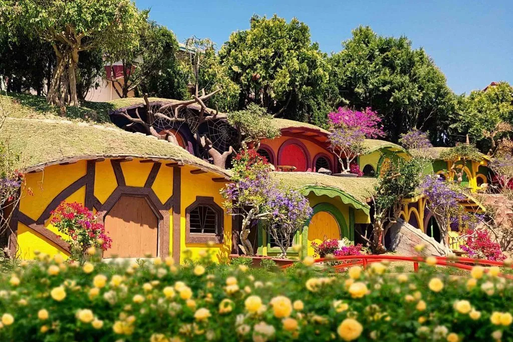
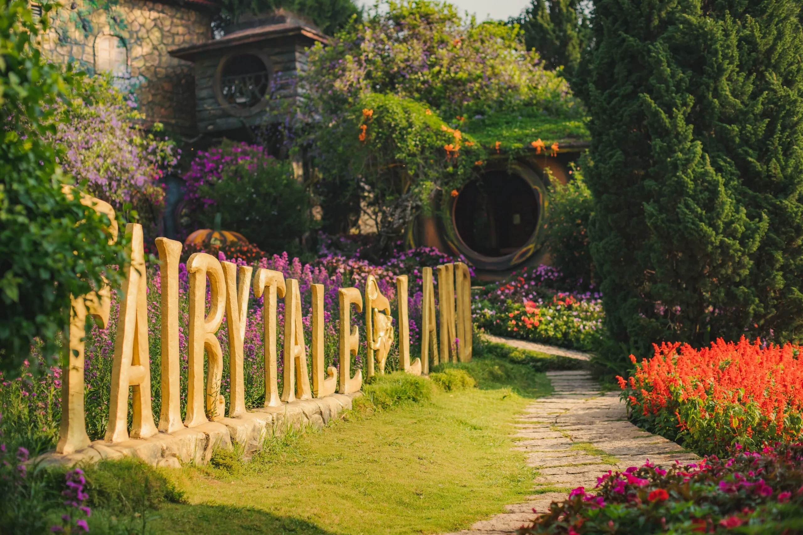
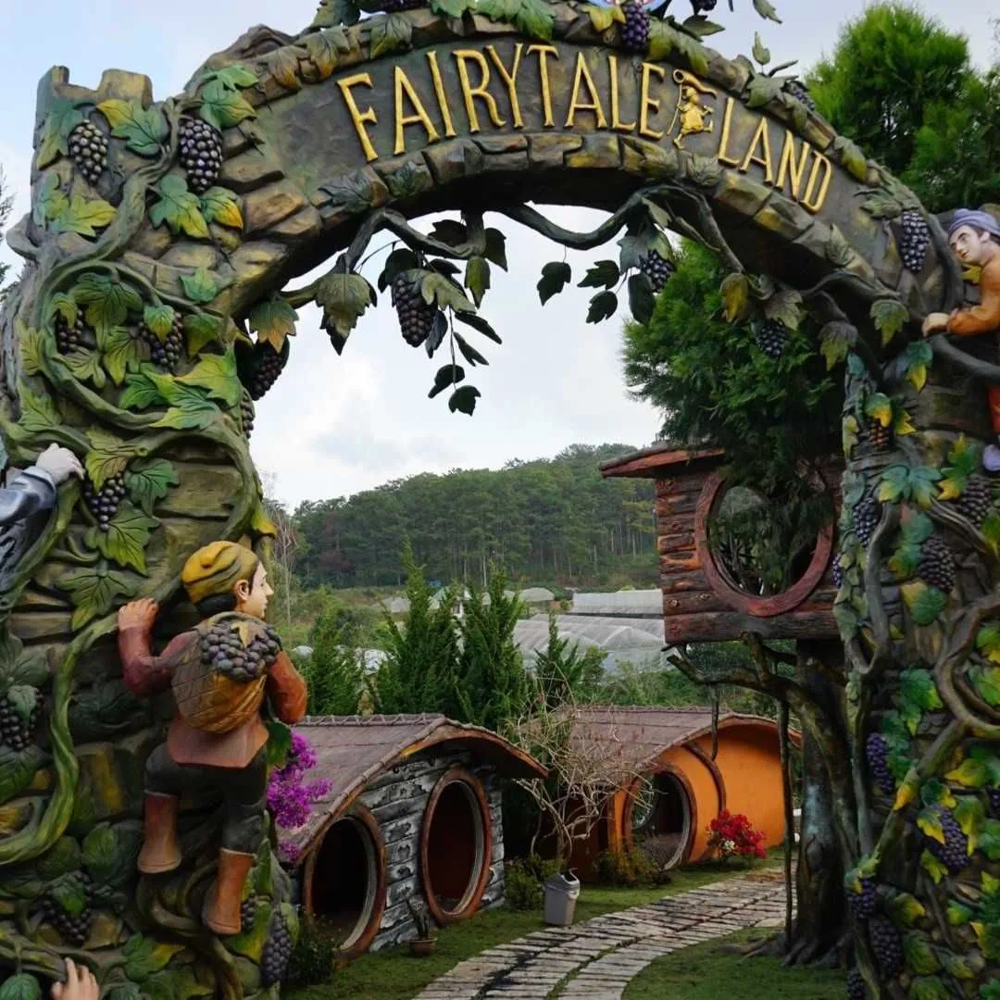

Da Lat Fairytale Land 2025 - Pocket fun experience

Table of Contents
- 1. Introducing Dalat Fairytale Land - A fairy tale garden in the heart of Da Lat
- 2. Detailed instructions on how to get to Dalat Fairytale Land
-
3. What's interesting about Dalat Fairytale Land? Fascinating experience not to be missed
- 3.1 Immerse yourself in the fairy tale space at Dalat Fairytale Land
- 3.2 Explore the enchanting fairy tale world at Dalat Fairytale Land
- 3.3 Experience fun activities at Dalat Fairytale Land
- 3.4 Experience having fun at Dalat Fairytale Land: Don't miss Vinh Tien wine cellar
- 3.5 Interesting places at Dalat Fairytale Land you should not miss
- 4. Some fun experiences at Dalat Fairytale Land you should know
- 5. Suggested attractions on the same route as Dalat Fairytale Land
- 6. Don't miss Xom Leo Grill & Chill – Culinary stop after the Dalat Fairytale Land journey
Located in the heart of the dreamy city of Da Lat, Da Lat Fairytale Land is gradually becoming a "sought after" destination for many young people every time they visit the foggy land. With a space designed in the style of a European fairy tale, this place makes visitors feel like they have entered a mythical world with unique Hobbit houses, brilliant flower gardens and countless enchanting virtual living corners.
Although it is a "rookie" in the list of Da Lat tourist attractions, Da Lat Fairytale Land has quickly won the hearts of tourists thanks to its unique design and inspiring space. Whether you come with close friends, a loved one or a small family, this beautiful campus will definitely bring memorable experiences.
1. Introducing Da Lat Fairytale Land - A fairy tale garden in the heart of Da Lat
Address: 81D Hoang Van Thu, Ward 5, Da Lat City
Opening hours: 7:30 a.m. - 5:00 p.m
Sightseeing ticket price:
-
Adults: 90,000 VND
-
Children (height from 1m2 - 1m4): 40,000 VND
Da Lat Fairytale Land is one of the most popular Da Lat tourist destinations today, especially for those who love Western fairy tale style. Inspired by fairy tales, this place offers a scene straight out of a fairy tale: tiny houses, colorful flower gardens, mythical characters and mysterious space. Thanks to careful investment in every detail, this fairy garden quickly became a "million-like" check-in point in Da Lat that is sought after by young people.
##Da Lat Fairytale Land, launched in early 2019, quickly became a "fever" destination in Da Lat thanks to its fairy-tale design. The brilliant, lively space like in a mythological story takes visitors into a mysterious and attractive world. In addition to the poetic scenery, this place also has many entertainment activities suitable for all ages. This is definitely the ideal stop for your upcoming trip to Da Lat.
2. Detailed instructions on how to get to Da Lat Fairytale Land
Da Lat Fairytale Land is located right in the central area of Da Lat city, so moving here is quite convenient and easy for visitors.
From the city center, you depart from the Da Lat market area or Lam Vien square, cross Ong Dao bridge, then turn up Le Dai Hanh slope. Continuing straight, you will pass Con Ga Church - one of the famous architectural works of Da Lat. At the intersection near the church, turn right towards Van Thanh flower village.
When moving to Cam Ly street, you continue to run about 1km, notice on the left you will see Vinh Tien Wine Cellar - this is also the Da Lat Fairytale Land complex. The tourist area is located on the same campus as the wine cellar so it is easy to recognize. Don't forget to save this address on Google Maps to make your journey easier!
3. What's interesting about Da Lat Fairytale Land? Fascinating experience not to be missed
With only a cost of less than 100,000 VND, you can enter the fairy tale world of Da Lat Fairytale Land - one of the most attractive check-in spots in Da Lat. The entrance ticket includes a tour guide who will take you to explore the entire campus, from the tiny village, the wine cellar to the unique Da Lat specialties display and sale area.
3.1 Immerse yourself in the fairy tale space at Da Lat Fairytale Land

Da Lat Fairytale Land is an ideal destination for those who want to "escape" from the hustle and bustle of life to find relaxation and peace. The space here is spacious, designed like a village in a fairy tale with green trees, colorful flowers and lovely miniature landscapes. Cute tiny houses, which are considered the living places of dwarves, create a unique, lively and extremely attractive scene.
Da Lat Fairytale Land is not only an ideal photo spot but also a place where you can enjoy the fresh air, immerse yourself in nature and save memorable moments with relatives and friends. This is truly a great choice for your upcoming trip to Da Lat.
3.2 Explore the enchanting fairy tale world at Da Lat Fairytale Land

Da Lat Fairytale Land is not simply a beautiful check-in point, but also a place that vividly recreates a true fairy tale garden. Inspired by the images of Hobbits and Western myths, the owner of this place has built a space filled with flowers, unique mushroom houses and ancient European architecture.
Each house on the campus is designed as a separate sightseeing area, bringing a new feeling at every step. Wooden roofs covered with the colors of time, mixed with colorful flower gardens create a peaceful, close and poetic natural picture.
The atmosphere here is reminiscent of famous fairy tales such as Snow White and the Seven Dwarfs, Cinderella or Sleeping Beauty. You will see images of small tree houses, fragrant flower paths, ancient bookcases or beautiful artistic little tables.
In particular, during the journey to explore Da Lat Fairytale Land, you will also be immersed in the melodious, gentle music that soothes the soul and brings a feeling of relaxation and completeness as if you are entering a dream world in real life.
3.3 Experience fun activities at Da Lat Fairytale Land

Not only attracted by the fairy tale scenery, Da Lat Fairytale Land also offers many attractive entertainment activities, suitable for all ages. Visitors will be able to immerse themselves in gentle music shows, enjoy Da Lat's signature dishes and feel the chilly atmosphere typical of the dreamy city.
In the evening, the campus becomes more cozy with campfire activities, singing and dancing, creating a cohesive space full of laughter. In addition, you can also participate in the experience of hand-knitting and dropping coins for good luck - a meaningful activity to send good wishes to yourself and your loved ones.
Da Lat Fairytale Land is also an ideal place to organize teambuilding, picnics or cozy meetings. The fresh, quiet atmosphere combined with charming scenery will help you regenerate energy and lift your spirit after stressful working days.
After having fun, you can rest at nearby bars or restaurants to sip a glass of warm water, enjoy some light specialties and continue your exciting journey of discovering Da Lat.
6. Don't miss Xom Leo Grill & Chill Shop - A culinary stop after the Da Lat Fairytale Land journey
After relaxing in the fairy tale world at Da Lat Fairytale Land, don't forget to stop by *Xom Leo Grill & Chill Shop* - a unique dining location in the heart of Da Lat. The restaurant stands out with its menu of fragrant, flavorful grilled dishes and a cozy, chill atmosphere. This is the ideal place to rest, chat with friends or reunite with family after a long day of exploring. Not only is it delicious, the restaurant also brings a feeling of relaxation and comfort amidst the cold weather typical of the mountain town.
📍Address:113 Huynh Tan Phat, Ward 11, Da Lat, Lam Dong
🗺️Directions:*See Directions*
📞Hotline:076.45.27.336 – 0899.42.84.34 – 0902.91.22.40
📌Reserve a table:*Here*
With an intimate space, extremely chill view and delicious food, Xom Leo Grill & Chill Shop is an ideal meeting place for an evening gathering with relatives or friends. Don't forget to save this address to make your trip to Da Lat more complete!
Da Lat Fairytale Land is a fairy tale-style tourist area in the heart of Da Lat, inspired by the Hobbit world. This place has poetic scenery, unique tiny houses and the famous Vinh Tien wine cellar. Visitors can also check-in at Uoc Nguyen Lake, Duyen Bridge and participate in many interesting fun activities. After visiting, don't forget to stop by *Xom Leo Grill & Chill Shop*at 113 Huynh Tan Phat. The restaurant is famous for its delicious grilled dishes and cozy chill atmosphere. An ideal stop to relax after the journey to explore Da Lat.